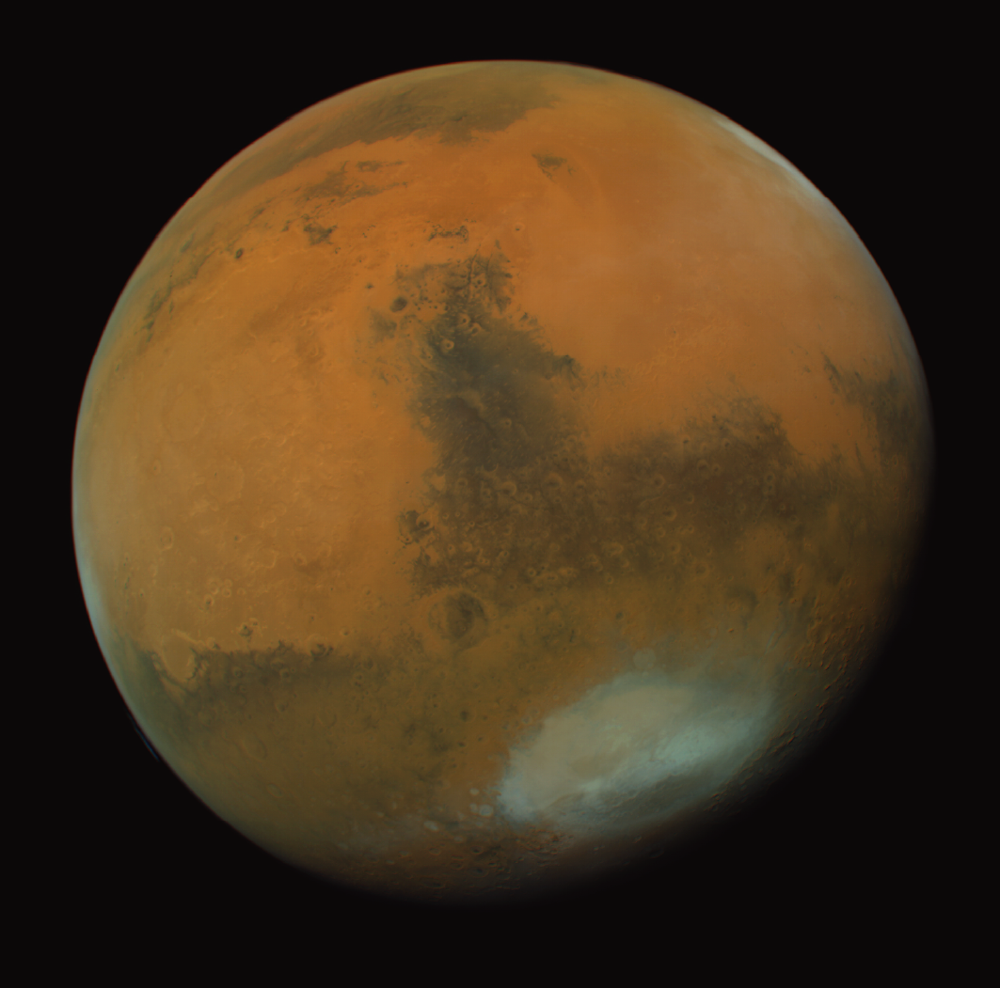
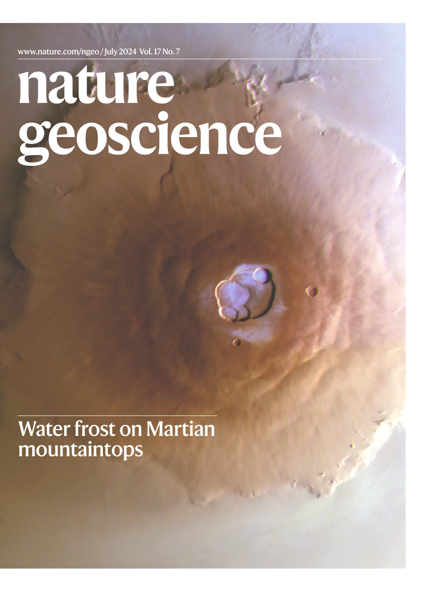

Aqueous alteration & iron oxides
Reconstructing ancient water and climate on Mars through the mineralogy of red dust and altered crust — including the discovery of ferrihydrite recording cold, wet conditions.
Planetary Scientist · Mars
I study the geological and climatic evolution of Mars — its ancient water, iron-oxide minerals, and the habitability of its crust. Incoming LCLU Fellow at the University of Cambridge.

I am a planetary scientist and SNSF Postdoc.Mobility Fellow at ETH Zurich, joining the University of Cambridge as an incoming Fellow of the Leverhulme Centre for Life in the Universe (LCLU). My research asks how Mars evolved from a potentially habitable world into the cold desert we see today.
I completed my PhD in Astronomy & Physics at the University of Bern with Prof. Nicolas Thomas, following an MSc in Geophysics at the University of Copenhagen and a BSc in Astronomy & Physics at Vilnius University. Before Cambridge I held fellowships at Brown University (with Prof. Jack Mustard) and ETH Zurich (with Prof. Cara Magnabosco).
Alongside research I am an active science communicator — a radio host on NTS.live and RadioVilnius.live blending experimental electronic music with planetary science, and a frequent voice in the international press on new discoveries about Mars.
My work combines orbital remote sensing from ESA and NASA missions, laboratory spectroscopy, machine learning on large planetary datasets, and terrestrial analog fieldwork in volcanic and hydrothermal settings.
Reconstructing ancient water and climate on Mars through the mineralogy of red dust and altered crust — including the discovery of ferrihydrite recording cold, wet conditions.
Transient water frost on the Tharsis volcanoes, slope streaks, and seasonal change, mapped with high-resolution orbital colour imaging.
Deep crustal materials and impact history at Jezero crater rim, and what they mean for ancient habitability and the samples Perseverance is collecting.

My discovery of transient morning frost on the Tharsis volcanoes was chosen for the cover of Nature Geoscience, July 2024. The finding reshaped how we think about the modern Martian water cycle and drew coverage from CNN, the BBC, and beyond.
Read the paper →A short selection of first-author work. Full list on Google Scholar.
My discoveries have reached a broad public audience — including a Planetary Society Radio interview with roughly half a million views and the front page of Reddit.
The best way to reach me is by email — I welcome enquiries from collaborators, students, and journalists.
Dr. Adomas Valantinas
Department of Earth & Planetary Sciences, ETH Zurich
→ Leverhulme Centre for Life in the Universe, University of Cambridge